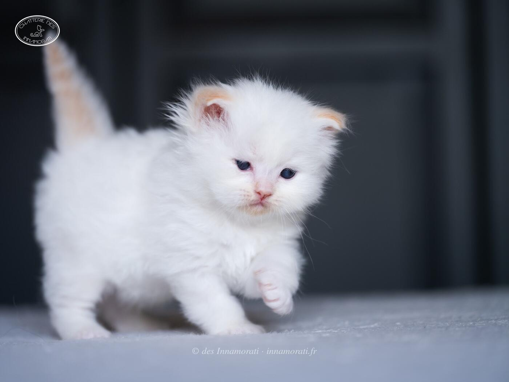

RobeMâle · Red tabby point
Naissance26 septembre 2025
ParentsUn Chouïa Craquante des Innamorati Aka Cracotte × Crowned Dream Real Sugar Daddy Aka BoGoss
StatutAdopté
Album7 photos, de octobre 2025 à avril 2026
Frères et sœursAlfonso des Innamorati
Demi-frères et sœurspar sa mère : 2026 avec Umami du Sanctuaire Divin
par son père : 2021 avec Padmée des Monts de Bohème, 2022 avec Quintessence
par son père : 2021 avec Padmée des Monts de Bohème, 2022 avec Quintessence


Photos réduites et marquées. Elles appartiennent à la Chatterie des Innamorati et ne peuvent pas être reprises dans une annonce.